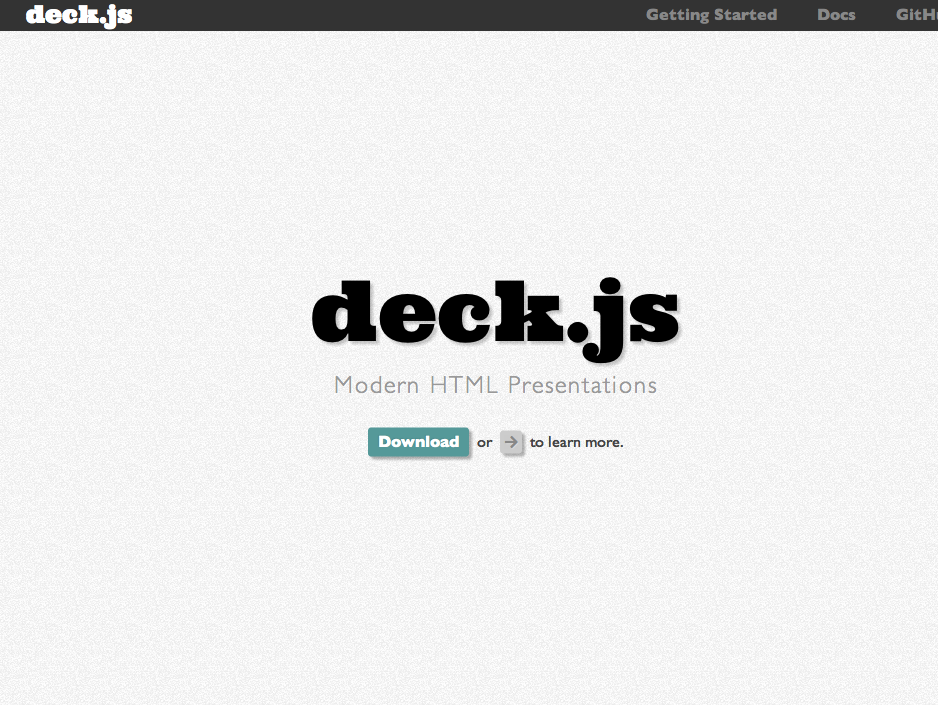
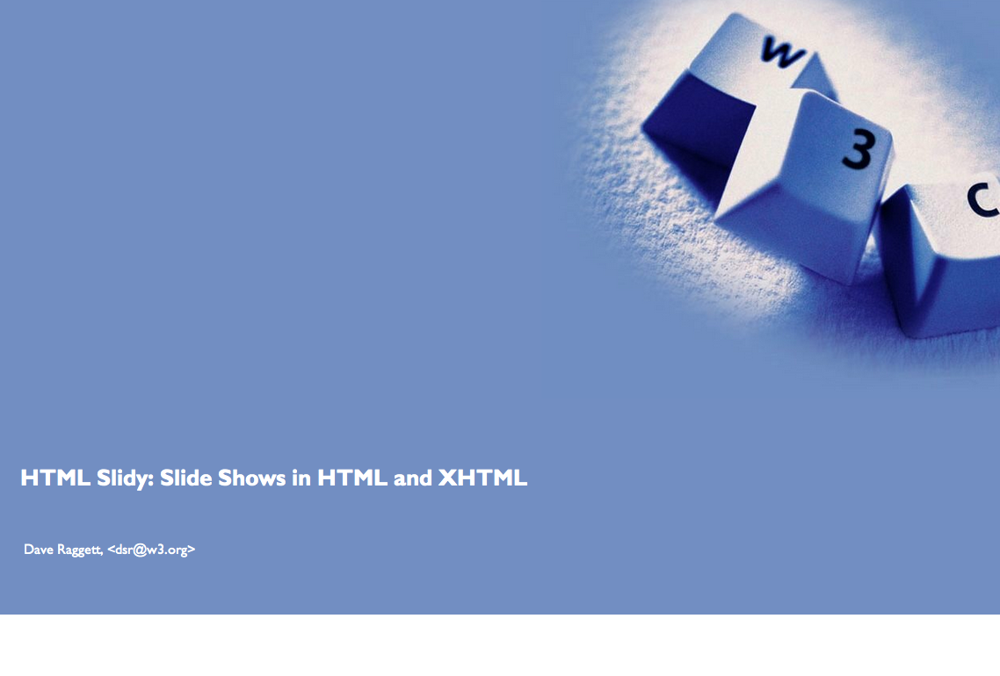
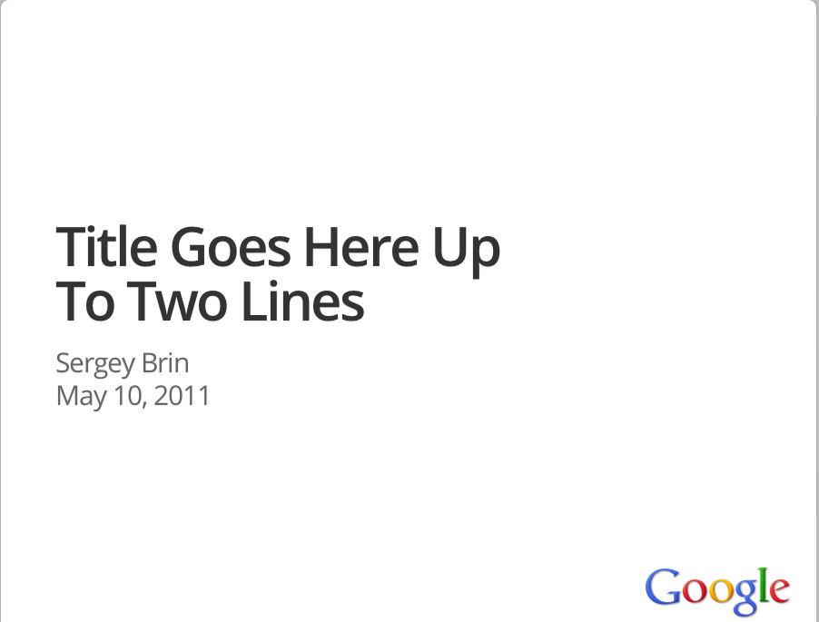
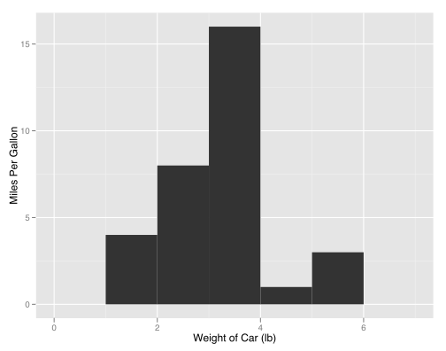
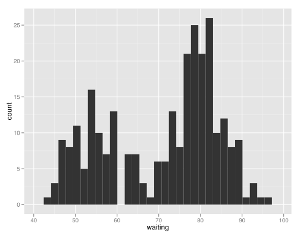

Slidify
Slidify
Reproducible HTML Slides
Overview
The objective of slidify is to make it easy to create reproducible HTML5 presentations from .Rmd files.
The guiding philosophy of slidify is to completely separate writing of content from its rendering, so that content can be written once in R Markdown, and rendered as an HTML5 presentation using any of the HTML5 slide frameworks supported.
Motivation
Several HTML5 slide frameworks exist...
deck.js

slidy

html5slides

... but it is a pain to write HTML
Installation
This package is not available on CRAN as yet. A development version can be installed from github using the devtools package.
library(devtools)
install_github('slidify', 'ramnathv')
In addition to slidify, you would also need to install development versions of knitr, whisker and markdown.
install_github('knitr', 'yihui')
install_github('whisker', 'edwindj')
install_github('markdown', 'rstudio')
Motivation
Usage
slidify is designed to make it very easy for a HTML novice to generate a crisp, visually appealing HTML5 slide deck. You can do it in just three steps!
- Write your source file in R Markdown
- Separate your slides using a horizontal rule
--- - Run
slidify("slides.Rmd")to generate your slide deck.
Framework
slidify allows you to render your slides using several HTML5 slide frameworks. Currently supported frameworks are:
Extending slidify to accommodate other frameworks is pretty straightforward. The plan is to support more frameworks over time.
Theme
The theme option lets you style your slides. Currently, this option is available only for deck.js which allows the following themes
- web-2.0
- swiss
- neon
Themes are just css files. So it is easy to extend this option to the other frameworks if you can write css.
Transition
The transition option allows you to define the transition between slides. Currently, this option is available only for deck.js which allows the following transitions
- horizontal-slide [default]
- vertical-slide
- fade
Please consult deck.js documentation for more information on themes and transitions
Highlighter
slidify is designed to be modular and syntax highlighting is one module. Currently two options are supported
jsR
The js option does client side highlighting using the javascript library highlight.js, while the R option generates a static page, highlighted using the R package highlight.
You will notice that the quality of highlighting for R code is better when done with the R package, rather than highlight.js.
Highlight Style
slidify allows you complete control over how you want to style your source code using css. The styles currently supported depend on the highlighter chosen.
jssee documentation for highlight.jsRtypeknit_theme[['get']]()to see available styles
In order to use the R option, you need to include the line opts_knit$set(out.format = 'html') inside your .Rmd file. This is required to fool knitr into highlighting source code. Specifying it outside the document does not work as knitr resets it to md as soon as it sees the .Rmd extension.
Math
This option allows you to write math in your presentations. slidify automatically adds a link to the js files from Mathjax CDN. Here are Maxwell's Equations from the Mathjax website.
$$ \begin{aligned} \nabla \times \vec{\mathbf{B}} -\, \frac1c\, \frac{\partial\vec{\mathbf{E}}}{\partial t} & = \frac{4\pi}{c}\vec{\mathbf{j}} \\ \nabla \cdot \vec{\mathbf{E}} & = 4 \pi \rho \\ \nabla \times \vec{\mathbf{E}}\, +\, \frac1c\, \frac{\partial\vec{\mathbf{B}}}{\partial t} & = \vec{\mathbf{0}} \\ \nabla \cdot \vec{\mathbf{B}} & = 0 \end{aligned} $$
A cross-product formula, again from the Mathjax website
$$ \mathbf{V}_1 \times \mathbf{V}_2 = \begin{vmatrix} \mathbf{i} & \mathbf{j} & \mathbf{k} \\ \frac{\partial X}{\partial u} & \frac{\partial Y}{\partial u} & 0 \\ \frac{\partial X}{\partial v} & \frac{\partial Y}{\partial v} & 0 \end{vmatrix} $$
Animated Lists
It is easy to animate a list by adding the class specified build. For example, consider the markdown source below
..ul: build
* Point 1
* Point 2
* Point 3
It produces the slide
- Point 1
- Point 2
- Point 3
Issues
Different HTML5 slide generation frameworks style the same elements differently. Moreover, they use different classes to define incremental builds, full page images etc.
As a result, a slide deck that looks visually appealing in one framework, may not look as nice in another. It will require carefully overriding the css definitions across frameworks so as to reach some kind of consistency.
The long-term goal of slidify is to be able to truly stand by the "write once, style as you like" idea.
License
slidify is made available under the MIT License. The slidify logo was created using supalogo. All included css and javascript are licensed under the terms specified by the respective slide generation frameworks.
Copyright (C) 2012 Ramnath Vaidyanathan
Permission is hereby granted, free of charge, to any person obtaining a copy of this software and associated documentation files (the "Software"), to deal in the Software without restriction, including without limitation the rights to use, copy, modify, merge, publish, distribute, sublicense, and/or sell copies of the Software, and to permit persons to whom the Software is furnished to do so, subject to the following conditions:
The above copyright notice and this permission notice shall be included in all copies or substantial portions of the Software.
THE SOFTWARE IS PROVIDED "AS IS", WITHOUT WARRANTY OF ANY KIND, EXPRESS OR IMPLIED, INCLUDING BUT NOT LIMITED TO THE WARRANTIES OF MERCHANTABILITY, FITNESS FOR A PARTICULAR PURPOSE AND NONINFRINGEMENT. IN NO EVENT SHALL THE AUTHORS OR COPYRIGHT HOLDERS BE LIABLE FOR ANY CLAIM, DAMAGES OR OTHER LIABILITY, WHETHER IN AN ACTION OF CONTRACT, TORT OR OTHERWISE, ARISING FROM, OUT OF OR IN CONNECTION WITH THE SOFTWARE OR THE USE OR OTHER DEALINGS IN THE SOFTWARE.
References
HTML5 Slides and R
R Markdown and knitr
Check Python Code Highlighting
import landslide
class MyMacro(Macro):
def process(self, content, source=None):
return content + '<p>plop</p>', ['plopped_slide']
g = generator.Generator(source='toto.md')
g.register_macro(MyMacro)
print g.render()
Interpret the Histogram


Google Charts
Vimeo
Why Should You Learn R?
Use RStudio